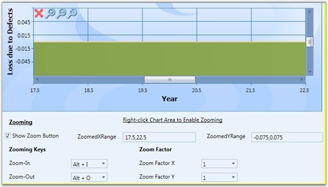

Essential Chart WPF lets the user to select the zoomed area in a chart. This can be achieved using the ZoomedXRange and ZoomedYRange properties. Under a zoomed state, you can select:
· The range of zoomed area in horizontal axis.
· The range of zoomed area in vertical axis.
Properties
The following table provides more information on the property used.
Table 157: Property
|
Property |
Description |
Type |
Value Returned |
|
ZoomedXRange |
Dependency |
DoubleRange |
Selects the zoomed area for horizontal axis. |
|
ZoomedYRange |
Dependency |
DoubleRange |
Selects the zoomed area for vertical axis. |
Methods
The following table provides more information on the method used.
|
Method |
Parameters |
Return Type |
Description |
|
VisibileRangeForZoomAllAxis |
ChartArea,ChartAxis |
Void |
Enables zoom in all axes. |
|
VisibleRangeForZoomHorizontalAxis |
ChartArea,ChartAxis |
Void |
Enables zoom in x-axis. |
|
VisibleRangeForZoomVerticalAxis |
ChartArea,ChartAxis |
Void |
Enables zoom in y-axis. |
The following code snippet illustrates selection of zoomed area in a chart.
1. Using XAML
|
[XAML]
<TextBox Margin="0,6,12,2" Name="textBox1" Grid.Column="2" Grid.Row="1" Text="{Binding ElementName=area,Path=ZoomedXRange, Converter={StaticResource rangeConverter}}" /> <TextBox Margin="0,6,11.999,2" Name="textBox2" Grid.Column="4" Grid.Row="1" Text="{Binding ElementName=area,Path=ZoomedYRange, Converter={StaticResource rangeConverter}}"/> |

Figure 247: Selecting Zoomed Area